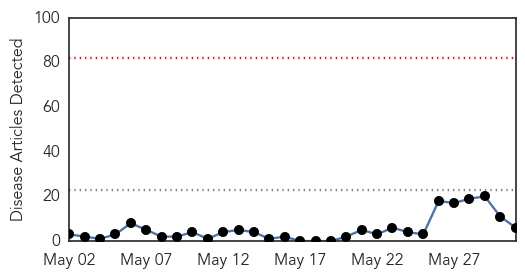
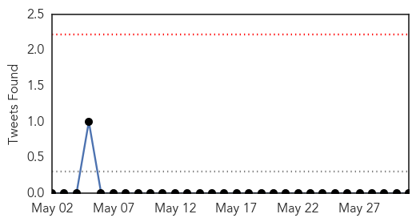
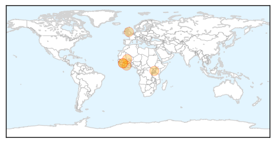
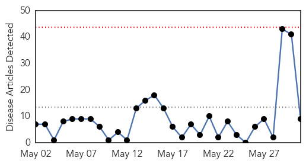
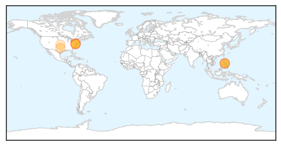
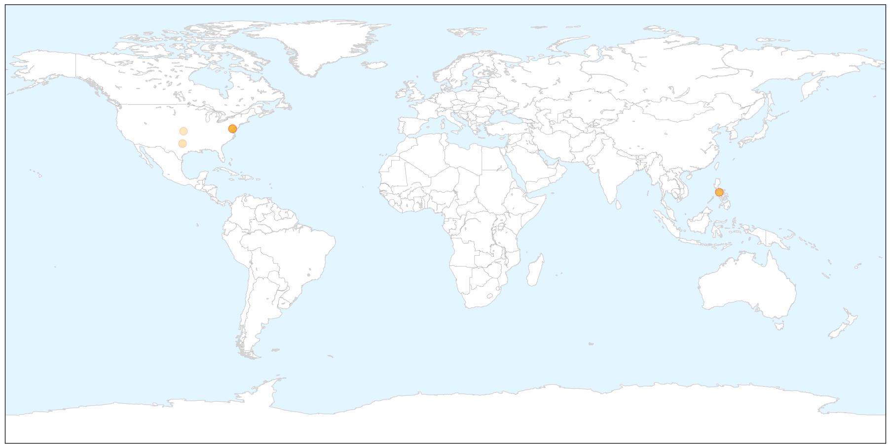

Ebola
30-Day Web Trend
0 alerts, 0 warnings

30-Day Twitter Trend
0 alerts, 0 warnings

Article Locations
Article Confidences

Top Articles:
Top Tweets:
-
No tweets found for May 31, 2014
Measles
30-Day Web Trend
0 alerts, 0 warnings

30-Day Twitter Trend
0 alerts, 0 warnings

Article Locations

X

Article Confidences

Top Articles:
- 0.997
- 6 infections acquired by travelers
- 0.993
- CDC: Number Of Measles Cases In The US Reaches 20-Year High
- 0.965
- US measles outbreak worst 288 cases detected
- 0.948
- News from southeastern Connecticut
- 0.880
- Measles Cases Reach 20-Year High in United States
- 0.789
- Measles Hits 20-Year High In U.S.
- 0.778
- 2nd Measles Case A False Alarm « CBS Pittsburgh
- 0.772
- Pediatrician Bedside Manner May be Key to Improving Vaccination Rates
- 0.770
- Washington seeing measles spike
Top Tweets:
-
No tweets found for May 31, 2014